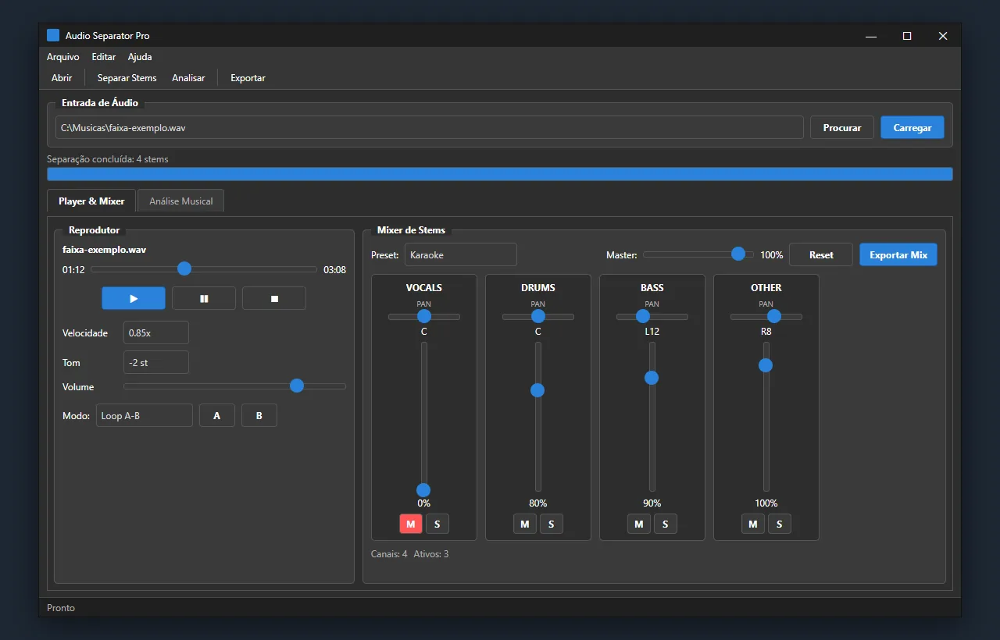
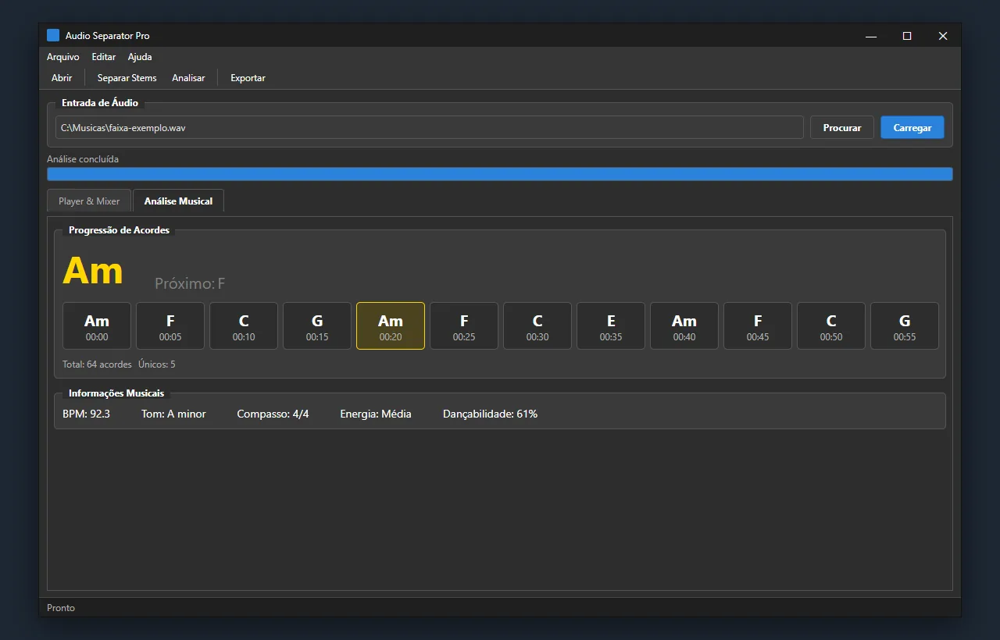
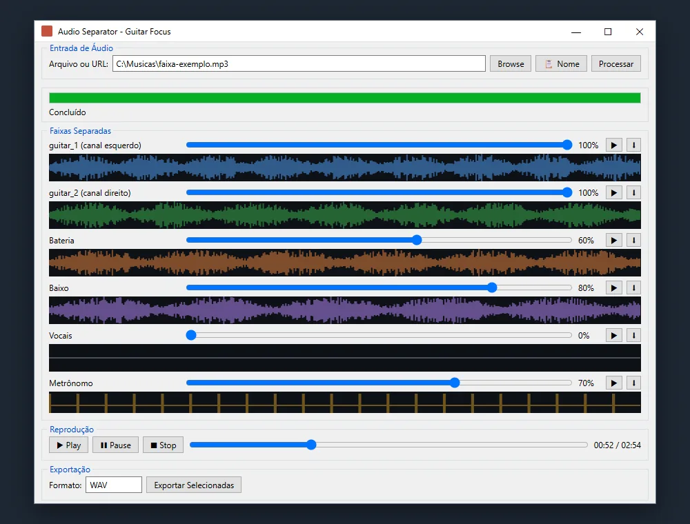

PortfólioAplicativos, jogos e automação
Mr. Yalc
Programa de computador que recebe uma música (arquivo, YouTube ou Spotify), separa voz e instrumentos, identifica andamento, tom e acordes e permite mixar, mudar tom e velocidade e exportar. Uma segunda versão é dedicada à guitarra.
- Tipo
- Uso próprio
- Separação
- Demucs (Spleeter como alternativa)
- Análise
- librosa
- Interface
- PyQt5 e, na versão de guitarra, tkinter
4faixas na versão principal: voz, bateria, baixo e outros
6faixas na versão de guitarra
±12semitons de mudança de tom
0,5x a 2xde velocidade
Telas
Telas reproduzidas a partir do código das interfaces (mesmo layout, cores e textos).






Processo
Entrada
Arquivo localmp3, wav, flac, ogg...
YouTubeyt-dlp
Spotifyspotdl
Separação
Demucs4 faixas
Versão de guitarrahtdemucs_6s + mdx_extra, média dos dois
Análise
BPM
Tom
Acordescroma e modelos de acorde
Energia e dançabilidade
Mixagem
Volume e panpor faixa
Tom e velocidaderubberband, sem distorção
Loop A-B
Saída
Faixas em WAV
Mix exportadoWAV, FLAC ou MP3 320k
Funcionalidades
- Presets do mixerPersonalizado, Karaoke (sem voz), Acapella (só voz), Instrumental e Drums & Bass.
- ReprodutorVelocidade de 0,5x a 2x, tom de -12 a +12 semitons, loop inteiro ou entre os pontos A e B.
- AcordesAcorde atual em destaque, próximo acorde e contagem de acordes únicos.
- CacheFaixas já separadas ficam guardadas e não são processadas de novo.
Versão de guitarra
Repositório mryalc-guitars.
- Dois modelosRoda htdemucs_6s (6 faixas) e mdx_extra (4 faixas) e faz a média, com 10 passadas e 50% de sobreposição.
- Várias guitarrasSepara até 4 guitarras: pelo canal esquerdo e direito ou por faixa de frequência (80 a 250 Hz, 250 a 2.000 Hz, 2.000 a 8.000 Hz).
- MetrônomoGera metronome.wav no BPM detectado, alinhado à música.
- LimitesMúsicas de até 10 minutos e arquivos de até 100 MB.
Tecnologias
PythonPyTorchDemucslibrosarubberbandPyQt5tkinteryt-dlp